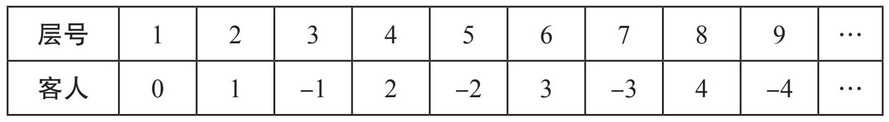
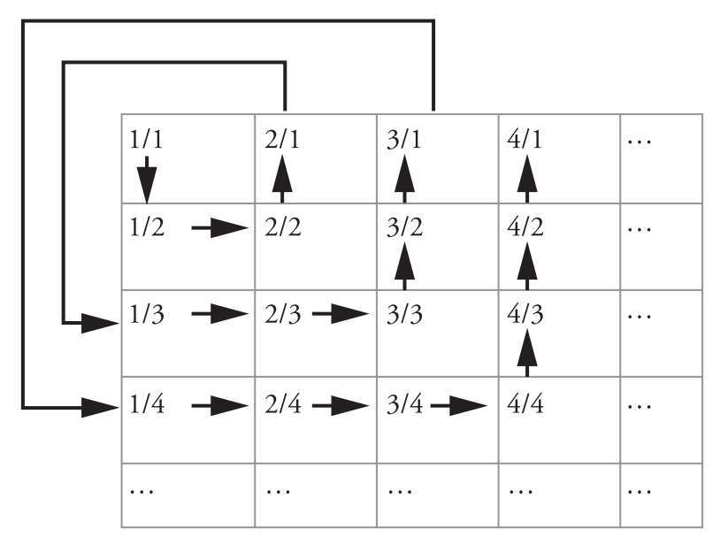
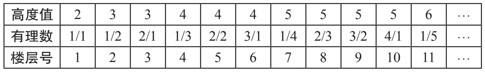
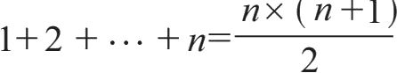
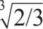
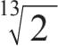

在距离地球数千光年的比邻星——英菲尼迪星球上，有一个后现代建筑奇观——一座根据数学家大卫·希尔伯特的理念建造的酒店。酒店以他的名字命名，是豪华的希尔伯特连锁酒店的一家分店。酒店的每一层都有一间单人套房。酒店有无穷多个房间，但酒店的总高度只有1米。芝诺有限公司承建的该酒店：它们把酒店第一层的高度建为半米，第二层是1/4米，第三层是1/8米，依此类推，直到无穷层。读者不妨试着鸟瞰这家酒店，感受一下它的独特。
房间的大小并不会影响老主顾们的光顾，他们分别是自然数：1，2，3，4，5，6，…。每个数字都占据其对应的楼层。平时该酒店总是客满。所有的酒店员工都住在邻近大楼的休息室里，包括接待经理欧米茄、前台接待员艾普斯隆以及两位女服务员希格玛和拉姆达姐妹（希格玛负责奇数号房间，拉姆达负责偶数号房间）。
某天，数字0来了，向前台接待员艾普斯隆询问是否有空房可以入住。艾普斯隆满怀歉意地告知他，酒店已经客满，根本无法再安排。艾普斯隆还好心提醒道：“要在我们酒店订到房间，你必须得提前很久预订。要知道，我们被授予五星级酒店并不是没有原因的。”
不过，我们的客人很幸运。此时，接待经理欧米茄来了。他训斥了前台接待员，并向0解释道，如果酒店只有有限个房间，那么在客满的情况下，当然没有可能再安排新的客人入住。但英菲尼迪大酒店拥有无穷多的房间，这个问题就可以很简单地解决了。
说完，欧米茄就通过酒店广播台播报道：“亲爱的客人们，烦请各位都搬到自己上一层的房间居住。”所有的数字都非常配合欧米茄的指示。于是，数字1搬到了酒店的2层，数字2搬到了酒店的3层，数字3搬到了酒店的4层，以此类推。这样，第一层就空了出来，数字0可以住进去了。
“请明晰我刚才的安排！”欧米茄对惊讶不已的艾普斯隆说道，“我相信，如果将来再有有限个新的客人前来投宿，你自己就能安顿好他们。”
“那是当然！”艾普斯隆回答道，“如果再有1000名新的客人，我会通知各位房客搬到新的房间，新房间的房间号比原房间的房间号大出整整1000，这样就能腾出1000个房间给新来的客人。
欧米茄听后，满意地去忙其他工作了，但平静马上被一阵急切的电话铃声打破。拿起话筒，在电话的另一端，她听到了数字13的咆哮声。
“你们酒店的价格高得太离谱了，”数字13说道，“一晚1000个CS币（宇宙谢克尔），这简直就是抢劫。即使你只收半个CS币，你的总收入也不会改变——无论如何，你的总收入都是无穷大。”
“很抱歉，我不能把价格降那么低，”欧米茄回答说，“仅仅是每个房间的日常维护，每天就要花费20个CS币，还有艾普斯隆、希格玛和拉姆达的工资呢？”
“那没问题，”数字13接着说道，“即使每天每个房间的花费是500个CS币，你每秒钟付给员工70个CS币，你仍然可以向每位客人只收取每晚半个CS币的住宿费，同时每天付给自己10亿CS币。”
“这怎么可能？”欧米茄惊呼。
“非常简单。虽然你的开支是无穷大，但你的收入也是无穷大。你可以随时从收入中拿出10亿CS币，你剩下的仍然是无穷大，你可以收支平衡。我有位富翁好友，他拥有一张面值为无穷大CS币的钞票。我有一次看到他买了份报纸，用这张钞票付款。你知道他换了多少钱回来吗？他拿回了原来的那张钞票！因为报纸的价格是2CS币，而无穷大减去2仍然是无穷大！就这样，他到哪买东西都如此，就是他总能免费买任何东西。现在，让我们回到我们的问题。即使你把每个房间每晚的价格都降到1/1000个CS币，实际上也不会有任何影响。即使价格是万亿分之一CS币，也亦然。
“嗯……”欧米茄呢喃道，“你说得很有道理。听起来也很有趣……我保证我会考虑你的建议。顺便提一句，如果我有一张无穷大面额的钞票，我将立即办理退休。因为此时我们不得不面对这样一个事实，那就是不管我再多挣多少钱，都不会再增加任何一点财富。
突然，一条信息跃入欧米茄的计算机屏幕，打断了他幻想赚得盆满钵满马上退休的白日梦。信息的内容是这样的：
致希尔伯特英菲尼迪酒店。发件人阿尔法·那格缇乌。
您好！我们负整数家族的所有数字-1，-2，-3，…近期想要到贵酒店入住一周时间。如果您能为我们所有数字找到房间，我们将不胜感激。您忠实的朋友，数字-17。
现在预计新来的客人数量是无穷大，那么之前通过每个住客都往上移动有限多层的方案已不可行。总不能要求住客往上移无穷多层吧！这将花费无穷长的时间，而且没有人知道要移动多远，什么时候可以停下来。
“也许我们可以在有限的时间里移动无穷多层呢？”欧米茄自言自语道，“我们设想一下，如果第一层的住客在半分钟内搬完，第二层的住客在1/4分钟内搬完，第三层的住客在1/8分钟内搬完，以此类推。你瞧！我发现了一种可以在一分钟内移动无穷多层的方法。但是这样一来，这些数字最终将走向何方呢？新的房间该是几号呢？不，这也不可行。我得想想别的办法。
欧米茄绞尽脑汁，一无所得。最后，她决定和前台接待员艾普斯隆再讨论讨论。他们集思广益，也许能想出一个主意。然而事与愿违，他俩仍然没找到合适的方法。
欧米茄只好再去求助剩下的两人：拉姆达和希格玛。姐妹俩在从事服务员工作之前，都修过代数拓扑学和泛函分析这两门高等数学课程。
姐妹俩听完欧米茄的问题后，说道：“给所有负整数安排住处根本不成问题。当我们学习集合论时，这也是老师给我们布置的第一道作业。只需要如下操作：数字0和1的房间保持不变，还是分别在酒店的第一层和第二层住着。所有其他的数字，依次挪到2倍于原楼层号的楼层去。也就是说，数字2住到4层，数字3住到6层，数字4住到8层，等等。这样，所有奇数层都空了出来，最后我们将有无穷多个空房间来容纳所有新来的客人。”
欧米茄非常赞同这对聪明姐妹的建议，于是她在大厅里立起了一块公告牌，上面写着：
酒店没有空房。
常年客满。
酒店可空出房间。
随时为客人安排入住。
公告牌摆出来数日后，负整数家族莅临了，所有人按照计划顺利入住。具体安排如下：

下面我来解释一下。数字0住到1层，也就是负数家族到来之前他的原楼层。每位正整数入住到楼层号为原来楼层号2倍的新楼层。比如，数字3住到6层，数字111住到222层。
所有的负整数所住的楼层号等于此数字乘以-2再加1。所以，数字-1住到3层，数字-17住到（-17）×（-2）+1=35层。
接下来的一周，酒店的客人们在宁静祥和中度过。
当负整数家族集体退房时，数字0决定和他们一起离开。他们走后，欧米茄惊奇地发现，原本被自然数数字住满的酒店，现在只有一半房间入住客人，实际上只有偶数号楼层住着人。那么，她现在需要削减开支——解雇希格玛，因为她负责的奇数号房间现在已经都是空房。但是另一方面，希格玛曾帮助她解决了负整数家族入住的问题，更不用说欧米茄深感拆散姐妹俩是不对的。但现在欧米茄这位接待经理不得不面对的一个事实是，不管怎样这家酒店的入住率已经下降到50%，尽管酒店目前入住客人的数量与曾经客满时入住的客人数量完全相同！
“一定有神奇的事情发生了，”欧米茄自言自语道，“试想，如果数字1住到10号房间，数字2住到20号房间，数字3住到30号房间，依此类推，会发生什么事呢？”她默默地思索着，愁绪渐生，“即使没有一位老顾客离店，酒店的入住率将降至10%！所有的自然数仍住在酒店里，但是入住率低得足以让我被解雇。”
她一边震惊于自己这个可怕的想法，一边提醒自己，两周后将有一个关于“理性实证主义时代的积极理想主义理论”的重要研讨会在酒店召开，与会的所有代表——所有的正有理数将入住酒店3天。
“届时，与会代表将全部被安排入住，”欧米茄继续自言自语道，“酒店现在有一半房间是空的，所以还有无穷多的空房间。”
这个发现并没有让欧米茄心情平复多久，她突然又被一大堆更令人担忧的想法惊到了。欧米茄意识到，所有分母为2的有理数就可以占据整个酒店，只要让分数1/2住到1层，分数2/2住到2层，分数3/2住到3层，依此类推。但与此同时，分母为3或者4，或者其他任何正整数的有理数都可以以同样的方式让酒店客满：分数1/3住到1层，分数2/3住到2层，分数3/3住到3层……换句话说，如果无穷多个无穷集莅临，其中任何一个无穷集都能填满整个酒店。更不用说，在他们到达之前，已经有自然整数集（1，2，3，4，…）这个无穷集占满了酒店。
可怜的欧米茄仍试图寻找其他可能的方法，比如，让数字1住进1层，数字2住进1001层，数字3住进2001层……然后分数1/2住到2层，分数2/2住到1002层，分数3/2住到2002层，依次分数1/3住到3层，数字2/3住到1003层，分数3/3住到2003层……但是没一会，她又意识到这并不是一个完美的方案。（读者可以自己思考一下为何此法无效。）
这次，欧米茄不再好意思去打扰拉姆达和希格玛。毕竟雇她俩来是打扫房间的，并不是作为酒店顾问的。于是，她决定（她也并没有多少其他选择）寻求奥佩容（Apeiron）星系（比邻星英菲尼迪所在的星系）的首席数学家芬克尔斯坦·奥斯特洛夫斯基·坎托罗维奇教授的帮助。
这位年事已高但精力充沛的教授说，这个问题看似复杂，但其实不然。
“多亏了一个叫欧几里得的人，这个问题得以相对容易地解决，他曾经生活在一个名叫地球的蓝色的遥远的小星球上。”这位拥有3个名字的教授说道。
“那这位欧几里得先生做了什么呢？”欧米茄问。
“他证明了质数有无穷多个。”教授回答说。“这个结果怎么能帮我们摆脱现在的困局呢？”欧米茄追问道，显然他对两者的关联有所不解。
“我会尽可能简单地解释给你听，”芬克尔斯坦·奥斯特洛夫斯基·坎托罗维奇保证说，“质数有无穷多个这一事实，可以让我们很轻松地解决酒店容纳所有有理数的问题。听着，我们只要把每个有理数都安排进某个质数的相应次指数幂号楼层，就能完成分配。第一个质数是2。我们可以把数字1送到2层，数字2送到22层，数字3送到23层，数字4送到24层……”
教授接着说道：“下一个质数是3。我们可以把分数1/2送到3层，分数2/2送到32层，分数3/2到33层，分数4/2到34层，依次继续安排下去。”
“但是，分数2/2其实就等于数字1，而数字1已经被安排在1号房间了啊。”欧米茄微微沉思，出声道。
“这根本不是问题。事实上，远不止于此，无穷多个房间将分配给数字1，他可以随意选择一层入住。”教授回答说，“现在我们再看第三个质数，也就是数字5。我们可以把分数1/3送到5层。”考虑到4层已经被数字2占用了，这时我们的接待经理欧米茄突然明白为什么教授要考虑质数的幂了。
教授继续说道：“把分数2/3送到52层，分数3/3送到53层……我想，现在你该明白我的意思了。接下来是7，第四个质数。思路还是一样的，把分数1/4送到7层，分数2/4送到72层，分数3/4送到73层，继续依此分配下去，直到把所有有理数都安置进酒店。”
“这是一个非常有趣的安排，”教授继续说，“虽然我们有无穷多组客人，每一组客人都足以占满整个酒店，但我们还是成功地安置了所有人。而且……我们还有无穷多个空房间！”
“什么！？”欧米茄简直不敢相信自己的耳朵。
“所有号码不是质数也不是质数的幂的房间，比如1，6，10，12，14，15，18，…都是空着的。”
欧米茄刚才还对教授解决住宿问题的绝妙办法欣喜若狂，这会儿又再度陷入沮丧中。达到100%的入住率再次成为问题。一位优秀的酒店经理怎么能够容忍酒店有无穷多的空房间。酒店的老板们会怎么想？
“您瞧，”欧米茄对教授说，“自然数集合本身就能把整个酒店占满，以前他们就是这样做的。突然，您提出这么个疯狂的方案，自然数集合再加上无穷多个无穷集，即使每一集合都可以占据整个酒店，却让酒店的入住率远远低于了100%。这听起来一点也不符合逻辑。我不是这方面的专家，但有没有什么方法可以提高酒店的入住率呢，好让我可以在领导那交差！”
“哦，我还以为有无穷多个房间空着的解决方案会更令人印象深刻呢，但如果你唯一感兴趣的只是入住率问题，那我也可以给你另一个解决方案，保证酒店100%的入住率。”
“哦，太感谢了！请告知我吧。”欧米茄恳求道。
“在我告知你之前，我们需要做一些准备工作。我们将每个有理数对应到一对数字。第一个数字对应这个有理数的分子，第二个数字对应这个有理数的分母。例如，有理数3/4对应数对（3，4）。把自然数n写成n/1，因此它们可以对应数对（n，1）。例如，自然数7可以对应到数对（7，1）。现在，我们将所有的有理数排列如下：

对于代数爱好者，我可以给出新方案的一般形式，即对于有理数n/m，如果分子n大于或等于分母m，则入住的楼层号为（n2-m+1）；若分子n小于分母m，则入住的楼层号为〔（m-1）2+n〕。
“譬如说，分数3/2的分子就比分母大，所以它被安排入住的楼层号为（32-2+1），也就是8号。你可以去数数，如果我们从数对（1，1）开始，按照箭头所示方向数（见上图），那么数对（3，2）将是你数到的第8个。
欧米茄再次欣喜不已，她甚至开始大肆宣传酒店的口号：我们无穷热烈地欢迎每一位客人。
芬克尔斯坦·奥斯特洛夫斯基·坎托罗维奇教授指出，有许多种不同的方案可以把有理数集合安置到酒店中。
“我再介绍一种方案。我们可以为每个分数定义一个高度值，即该分数的分子和分母之和。也就是说，分数n/m的高度值h定义为（n+m）。那么，所有有理数的最低高度值为2，并且只有一个分数取这个高度值，即1/1。有两个有理数的高度值是3，它们分别是1/2和2/1。分数1/3、2/2和3/1的高度值都为4。对于高度值h=5，对应4个有理数：1/4、2/3、2/3和4/1。那么，所有的有理数都可以根据它们的高度值递增排列。[1]

动动脑筋
请读者证明在上述第三个解决方案中，分数n/m入住房间的号码为1/2×（n+m-2）×（n+m-1）+n。
比如说分数2/3（即n=2，m=3）就应该住到号码为1/2×（2+3-2）×（2+3-1）+2=8的房间。
提示：

自此，酒店因能容纳任意数量的客人而名声大噪，遐迩闻名。无论新来住店的旅客团队是有限位客人还是无穷多位，也无论酒店是否事先已经住满，甚至无论酒店房间是否早已经预订完了，只要有新客人莅临，酒店就能为他们安排房间。
某日，一件意想不到的事发生了。这天早上，遥远的德尔塔连续统（Delta Continua）星球发来一封电子邮件，上面说0到1之间的所有数字都有兴趣来参观酒店。当然，我们的接待经理欧米茄是知道有“不少”数字存在于0和1之间的，比如

，e6-π-π5，1/2，3/156，e / 47，（5+
）/ 213，…，然而，她并没有意识到安顿这些数的困难。酒店不是已经安顿下无穷多个无穷集了吗？那么再来一个无穷集，安排它们的住宿又有何困难呢？但还是出现了问题，她无法给出合理的房间分配方案。绞尽脑汁无所得后，她只能再次向芬克尔斯坦·奥斯特洛夫斯基·坎托罗维奇教授或服务员希格玛、拉姆达求助。欧米茄决定打电话给教授。而令她惊讶甚至失望的是，这位杰出的教授不仅不能为她提供解决方案，而且还一口认定此问题无解。
“如果我把自然数集合赶出酒店呢？能否有助于解决问题？”欧米茄再次尝试地问道。
“不会。”教授斩钉截铁地回答。
“一个拥有无穷多空房间的酒店，怎么可能没有足够的房间容纳一群新来的客人呢？”欧米茄仍不能轻易接受这个坏消息。
“别那么固执。我们先不去寻求你的问题的解决方案，”教授建议道，“而让我先向你证明一个事实，就是这个拥有无穷多房间的酒店不仅不能安置下0和1之间的所有数字，甚至都不能安置下所有只用数字0和1生成的小数。
“你是认真的吗？”经理欧米茄问。
“芬克尔斯坦·奥斯特洛夫斯基·坎托罗维奇教授在谈论数学或音乐时，从不打妄语。”教授以第三人称品评自己。
“那好吧。那就请您做一个解释吧。”欧米茄只好正襟危坐，准备听讲。
芬克尔斯坦·奥斯特洛夫斯基·坎托罗维奇教授解释道：“首先，把所有数字都写成无穷小数形式。意思是，我们不写0.101，而是把它写成0.101000…的形式。现在，假设我们已经找到了安置0和1之间所有数字的方案。”
“我猜您要用反证法，是吗？这是数学家们常用的技巧！”欧米茄说道。
“嗯，假设我们按如下方案安排住宿：A1住到1层，A2住到2层，A3住到3层，依此类推。那么，这些A是谁呢？嗯，请看下表，A1，A2，…是给它们起的“新”名字：
A1=0.a11a12a13a14a15…
A2=0.a21a22a23a24a25…
A3=0.a31a32a33a34a35…
A4=0.a41a42a43a44a45…
A5=0.a51a52a53a54a55…
……………………
“换句话说，aik是i层住客数字Ai小数点后的第k位。也请注意，所有的aik非0即1。举个例子，假设小数0.111000110010…住在3层。这个数小数点后的每位分别是a31=1，a32=1，a33=1，a34=0，a35=0，其余位置的取值亦易见。
教授继续说：“现在，我可以给你找一个0和1之间的数，也就是说，一位来自德尔塔连续统星球的客人，但未能被安置进酒店。以此来说明，我们不可能把0到1之间的所有数字安顿进酒店，因为我们上述的列表有问题。”
“记这个特殊的数为‘B’，也表示成无穷小数的形式B=0.b1b2b3b4…，其中bi为0或1，并且每个bi异于aii（aii是上述列表中对角线位置上的数字）。如何实现呢？”
“其实想法非常简单。如果aii=0，那么取bi=1。反之，如果aii=1，取bi=0。”
“我给你举个例子吧。假设我们安置好了0和1之间的所有0和1字串。楼层分配方式随意，假设安排如下：
A1=0.010010001…
A2=0.010101010…
A3=0.110110110…
A4=0.100110111…
A5=0.011111110…
……………………
“现在我们来构造数字B。取b1=1，因为a11=0（即数A1小数点后的第一位是0）；取b2=0，因为a22=1（a22是数A2小数点后第二位）；取b3=1，因为a33=0，依此规则继续。”
“但是，您怎么知道B未被安顿进酒店呢？”欧米茄忍不住问道。
“这很明显啊。依照我们的构造，数B小数点后的第一位数字b1与A1小数点后的第一位（即a11）不同。由此可知，B不可能等于A1，即使它和A1在其他位置上的数字都完全相同。”
“现在，我们来看数B小数点后的第二位，也就是b2。出于同样的原因，b2将不同于A2小数点后的第二位数字，因此，无论B在其他位置上如何取值，B都不可能等于A2。”
“我们继续考察数B小数点后的每一位数字，结论都将不变。数B小数点后总有一位数字与数Ai相应位置上的数字不同。因此，我们不得不承认，数B并不等于上述列表中的任何一个A，也就是说B将不在住店宾客之列。他同朋友们一道从德尔塔连续统星球而来，却未像朋友们那样入住酒店。”
“如果真出现这种情况，我会把B排在A1之前。”欧米茄一想到这个新主意就兴奋得跳了起来。（欧米茄并无意为难教授，但她这句确实惹恼了他。）
“你根本没明白我的解释！要知道，即使你把B加到列表中，我也总能构造出一些不在列表中的新数——称它Y，就像我构造数B一样的思路。”
“好吧，您是对的。但我还是不明白为什么客人们在拥有无穷多房间的酒店里还找不到空房。”
教授解释说：“这只能意味着，尽管你们酒店的房间数量确实是无穷多的，但想要入住的客人的数量是更大的无穷。”
“您说什么？更大的无穷？”欧米茄激动地吼道，“请给我解释一下，为什么会有比无穷大更大的无穷大！”
但此时的老教授已经精疲力竭了。
插曲
一个有限到无穷的故事：从古戈尔到谷歌
如何比较不同集合的大小呢？大西洋中的水滴数量是否大于棋盘上棋子排列方法的总数呢？一个人能创作的曲子的数量是否大于0到1之间所有有理数的数量呢？如果讨论的集合含有非常多元素或是无穷集的时候，如何能知道一个集合所含元素的数量比另一个集合的少呢？何时可以认定两个集合含有相同多的元素呢？区分一个元素超多的集合和一个无穷集，真的很容易吗？即使是伟大的阿基米德也已经意识到，把一个元素非常多的集合和一个无穷集混淆起来，可能会出现一些问题。文献《计算沙粒的人》是来自锡拉丘兹的一位伟人的著作，在书中他欲计算出宇宙中沙粒数目的上限。
有些人认为沙子的数量是无穷大；这里，我指的是宇宙中所有地区的沙子，无论是人类居住区的还是无人区的。当然还有一些人，他们虽然不认可数量达到了无穷大，但也认为没有任何一个数字能够比沙粒的总数目更大。
——阿基米德
阿基米德发现宇宙中沙粒的总数量不超过1063，由此他证明了先前的两种说法都是错误的。
多年后，确切地说是在1938年，英国天体物理学家、天文学家和数学家阿瑟·斯坦利·爱丁顿爵士在剑桥大学三一学院做了一次演讲，他说：我相信宇宙中有157477241362750025776056539611815554680447093662314251856 31031296个质子和相同数量的电子。
今天，这个巨大的数字被称为“爱丁顿数”。虽然它看起来令人震惊，但它远未及无穷大。
数学家爱德华·卡斯纳和詹姆斯·纽曼在他们1940年出版的《数学与想象》（Mathematics and Imagination）一书中写道，人们必须明白“非常多”和“无穷大”是两个完全不同的概念。再大的数也不可能变成无穷大。我们可以写出一个任意大的数，但它不会比1或7更接近无穷大。
一个有趣的小细节是“古戈尔（googol）”一词最早出现在该书中。卡斯纳的侄子弥尔顿当时9岁，他建议为1后面跟100个0这个大数命名。有趣的是，谷歌公司的名字“Google”正是googol的误拼。
这个奇特的小男孩还建议用“古戈尔普勒克斯（googolplex）”来表示由1和一大堆0组成的数字：“古戈尔普勒克斯应该是1后不断地写0，直到你写累了才停下。”如今，古戈尔普勒克斯代表的数字被更准确地定义为10googol。不要试图去写出这个数。天文学家兼作家卡尔·萨根（1934-1996）在他的电视节目《宇宙：个人之旅》中指出，人类不可能写出古戈尔普勒克斯这个数，因为在可观测的宇宙中没有足够的空间能够容纳其所有的字符。
然而即便如此，古戈尔普勒克斯与无穷大还是有无穷的距离。事实上，它也不比1或7或任何你想要命名的数字更接近无穷大。
即使是古戈尔普勒克斯的古戈尔普勒克斯次方幂仍然是有限的。为了纪念我最亲爱的朋友，胖乎乎的可爱小熊维尼，我把这个数称为维尼普勒克斯（Poohplex）。那么，如果古戈尔普勒克斯已经超出了人类的想象，你能对维尼普勒克斯说些什么呢？你可以创造出任何你喜欢的庞大的数，甚至给它们起任何你喜欢的名字。你可以写出维尼普勒克斯的维尼普勒克斯次方幂，然后再考虑这个结果的阶乘。去估算这些数的大小就已让我深感头疼，但无论如何，这些都还是有限数，而且并不比7更接近无穷大。
让我们回到无穷大的问题。
[1]当高度值相同时，按分子由小到大的顺序排列。